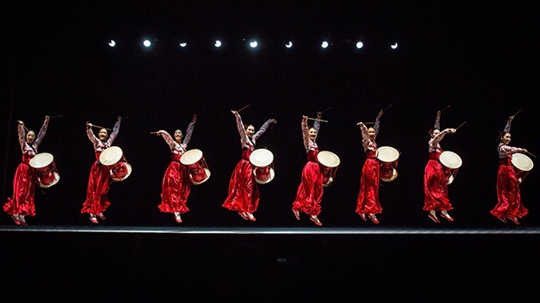

Arirang
History of Arirang

Arirang is the most famous folk song of Korea, although the origin of the song is
not yet defined clearly. There are hundreds of theories on the meaning of Arirang and also various version of the song. The most reliable hypothesis is from the lyrics
in 16th~17th century Milyang. This province has the most popular version of Arirang.
The local folk tale is about a lady, Arang, who was a daughter of a lord in Milyang.
She was kidnapped and killed while struggling to keep her chastity. The people
of Milyang praised her and created the song. Her name, Arang in the song eventually
changed to Arirang as the song had spreaded in the province. Another hypothesis is from
a folk tale of two lovers. A man was chased from soldiers and separated from his fiancee.
The fiancee sang a song with a sore heart of meaning “I am separated from my love”.
The meaning of Arirang is divided in each letter, A-ri-rang: ‘A’ is for ‘I (me)’, ‘ri’
is for ‘separated from’, ‘rang’ is for ‘a man’.There are several valuable theories of
Arirang. Most of them are based in the folk tales that state separating from lovers or
suffering from the harsh life. Therefore, Arirang is thought to represent impressively
the emotion from the life of ancient Korean.
©Joseph Park